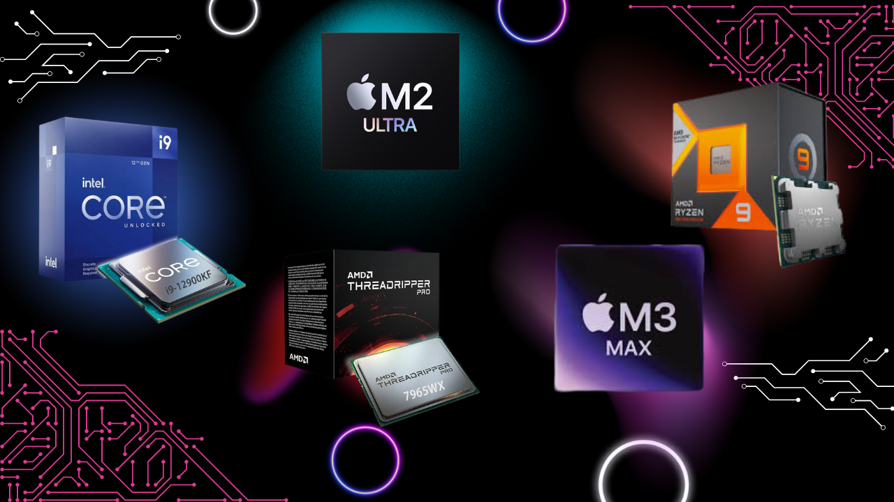

Tipos de procesadores
Los procesadores son componentes fundamentales en cualquier dispositivo electrónico, ya que se encargan de ejecutar las instrucciones y procesar los datos. Existen distintos tipos según su rendimiento, arquitectura y uso previsto. Algunos están diseñados para tareas básicas como navegación y ofimática, mientras que otros están optimizados para trabajos exigentes como diseño gráfico, videojuegos o inteligencia artificial. También varían según el tipo de dispositivo, como computadoras de escritorio, portátiles o móviles. La elección del procesador adecuado depende del equilibrio entre potencia, eficiencia y necesidades del usuario.
- Existen muchos tipos de procesadores en el mercado, pero algunos de los más potentes y reconocidos en la actualidad son:
- AMD Ryzen 9: Esta línea de procesadores de alto rendimiento está diseñada para usuarios exigentes, como gamers, creadores de contenido y profesionales. Cuenta con múltiples núcleos e hilos, lo que permite ejecutar tareas pesadas en paralelo, y ofrece excelente relación calidad-precio en comparación con otras marcas.
- Intel Core i9: Es uno de los procesadores más potentes de Intel, ideal para tareas intensivas como edición de video 4K, diseño 3D y juegos de alto nivel. Destaca por su alta velocidad de reloj, su eficiencia en núcleos híbridos (rendimiento y eficiencia) y compatibilidad con tecnologías avanzadas como Intel Thread Director y overclocking.
- Apple M2 Max: Este chip está diseñado por Apple para sus MacBook Pro y Mac Studio. Utiliza una arquitectura ARM altamente eficiente, integra CPU, GPU, memoria y otros componentes en un solo chip (SoC), y destaca por su excelente rendimiento gráfico, bajo consumo energético y optimización con macOS.
